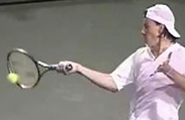
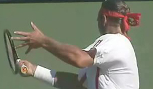
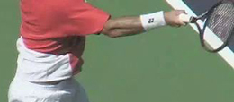
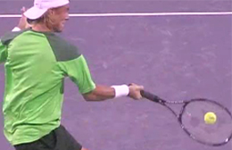
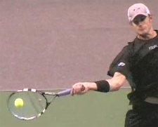

Modern Forehand Grip Variations Part 2¶
Modern Forehand Grip Variations: Part 2¶
John Yandell¶
As we saw in the first part of this article, the common terminology we use to describe the forehand grips is inadequate for the complexity of the modern game. It's commonly believed that most top players use a "semi-western" grip. Actually there are at least six distinct grip structures in the men's game, and 3 of these are some version of a "semi-western." In the first article (link), we looked at the 3 more conservative pro grips, the eastern, the modified eastern, and the mild semi-western. Now in part 2 we'll turn our attention to the 3 more extreme modern grips.
After we published the first article, I heard from one subscriber who wondered why I was going into so much detail about the grips and didn't think these relatively small differences between the players could possibly matter. The reality is that we can trace visible differences in the swings--and related advantages and limitations in a player's style--directly to the grip structure.
 bevels on the
bevels on the
racket.
The moderate semi-western or 4 / 3 1/2 is probably the most common grip on the men's tour.
The grip has a dramatic effect on the use of different stances and also on hand and arm rotation, two controversial elements in modern tennis. Besides that, it's fascinating. But it's not an academic exercise. If you want to understand how top players put the complex elements of the modern forehand together the difference in the grips is the starting point.
Bevels and Key Points
So first, let's review the way we analyze the grip differences. We identify the grips by looking at how players connect the two key points on the hand to the 8 bevels on the racket handle. Then we assign the grip two numbers that reflect those two points of connection. The points on the hand are the base of the index knuckle and the center of the lower heel pad. Which bevel is the index knuckle on? That's the first number. What bevel is the heel pad on? That's the second number.




The 4 / 3 1/2 shifts the heel pad an increment further under the handle.
We used this system in the first article to look at the more conservative pro grips. We found that Pete Sampras, for example,.has both his index knuckle and his heel pad were on bevel 3, aligned behind the racket head. We called this a 3 / 3, or a modern eastern grip. We found that Federer is a 3 1/2 / 3, or a modified eastern. Agassi is a 4 / 3, what we called a mild semi-western. Now let's use this same framework to understand the more extreme versions.
4 / 3 1/2 : Moderate Semi Western
We said there were 3 versions of semi-western, with Agassi as an example of the most conservative. In the second semi-western variation, players keep the index knuckle on the 4th bevel, but they slide the heel pad down, to the edge between bevel 3 and bevel 4. So in our new terminology that makes this grip a "4 / 3 1/2." We call this a moderate semi-western. It's probably the most common forehand grip on the men's side of the tour. It's the grip used by players including David Nalbandian, Guillermo Coria, Lleyton Hewitt, Juan Carlos Ferrero, Fernando Gonzales, and Gustavo Kuerten, among others.
When we look closely at the 4 / 3 1/2 we can see that the balance has shifted. Both of our key checkpoints have now moved downward partially under the handle. The index knuckle is on Bevel 4. The heel pad has shifted down to the edge between Bevels 3 and 4. This means that most of the palm of the hand is now on a diagonal to the racket face. This is a significant difference with the three milder grips we looked at in the first article, where most of the hand was behind the handle.
The consequence is that as the player comes through the hitting zone, there is more naturally more upward thrust of the racket, and therefore the potential to generate more topspin. However the grip has flexibility in that it also allows players to flatten the ball out and finish with the racket on edge or close to on edge, similar to the finish of moderate semi-western players like Agassi.
With a moderate semi-western it's still possible to finish with the racket vertical or on edge.
The 4 / 3 1/2 grip represents a technical divide in the modern game. For players who shift this far underneath, it's no longer natural or comfortable to step into the ball with a square stance. The torso rotation pattern, as we have seen, is generally greater than the less extreme grips. (link.) 4 / 3 1/2 players usually finish with the rear shoulder pointing partially or even all the way forward toward the net.
There is no way to do that when you step into the ball unless the front foot twists out of the way in the middle of the swing, as we saw in the stances article (link.) So the neutral stance isn't natural with this grip. As a result, you don't see these players play like Agassi--standing up on the baseline and stepping into the ball. Some 4 / 3 1/2 players, like David Nalbandian, will sometimes play near the baseline and hit the ball on the rise. But they do this mainly from an open stance. And Nalbandian appears to be more the exception than the rule. These players only step into the ball when it's low, and they look awkward doing it.
A moderate pro semi-western raises the contact zone to shoulder level.
So why is the predominant pro grip? The real advantage of the moderate semi-western is that it makes it much easier to play high balls, balls at shoulder level or even slightly above. This natural contact height is higher, and this helps players deal with the high bounce generated by the incredible spin levels in pro groundstrokes. For the same reason, these players also tend to come up into the air and hit with both feet off the ground. This is what it takes to play the typical pro forehand near the top of the bounce.
If the players stood in and simply let the ball go, in some cases it would bounce over their shoulders. As we saw in the stance article, the extreme grips and the explosion up into the air are ways to control the contact height. The combination allows them to keep the ball in the strike zone around mid chest level on most balls.
It's not a coincidence that the most gifted players like Federer or Agassi have more conservative grips suited to playing the ball earlier. Obviously the players that use the more extreme grips are tremendously talented as well. But it shows how difficult the game really has become that most of the players are staying much further back and dealing with the speed and searing spin in this fashion.
In addition to giving players more time and the ability to play higher balls, The 4 / 3 1/2 grip makes it natural to hit even more topspin and also to arc the ball. It allows players to grind opponents into submission in high velocity, heavy topspin wars of attrition. This is the signature style of most modern men's matches. Make no mistake, pro players, take Fernando Gonzales for example, can still hit huge canon shot forehands with this grip. But typically, it is associated with a large swing, a high contact point, heavy spin, and a position deep behind the baseline.
The 4 / 3 1/2 grip is a watershed grip for a second reason that is related to all of the above factors The swings patterns with this grip tend to have more hand and arm rotation. Typically we see the players with this grip turn their hands around 180 degrees on most balls. (link for more on Hand and Arm Rotation.) You will see some of these players like Hewitt or Nalbandian, or even Kuerten, come through with the racket more on edge on some balls, but more typically the hand rotates as part of the natural extension of the swing. This is another reason the swing is more awkward on low balls, compared to the less extreme grips.
The 4 / 4: the most extreme and last outpost of the semi-western.
4 / 4 Extreme Semi Western
Some of the top semi-western players in the game shift the hand still a half notch further, to what we call the 4 / 4 grip. This is the third variation. We call this an extreme seim-western. Now the index knuckle and the heel pad or both centered on Bevel 4. Two good examples are Andy Roddick and Tommy Robredo. We call the 4 / 4 an extreme semi-western. It's the last outpost before the hand goes under the handle, because the hand is still at a slight diagonal to the racket face. Any further underneath and we've crossed the border to some version of a western grip.
The extreme semi-western grip produces a swing pattern that is quite similar to the 4 / 3 1/2. But, since the hand is slightly further under the grip, it also raises the maximum height of the contact zone even further than the moderate version. With this grip Roddick is quite comfortable hitting balls at shoulder height or even a little above.
![A person hitting a ball with a tennis racket Description automatically With the

the heel padhas shifted
downward and is underneath the
4th bevel.
The extreme semi-western also promotes another increment of hand and arm rotation in the basic swing. 4 / 4 players can extend the swing through the line of the shot to what we've called the universal finish points, as we've seen. (link.) But with this grip it becomes virtually impossible for the racket to come through on edge. You see these players rotate the hand 180 degrees or more on literally every ball. Are they swinging fast? It certainly appears that way. Are they generating heavy spin? Dito. Are they generating tremendous ball speed? You know that true if you have every had the pleasure of sitting courtside and watching Roddick crank the ball inside out.
With an extreme semi-western a contact point above the shoulder really isn't a problem.
But the grip seems to have real limitations, similar to the 4 / 3 1/2 grip, but probably more severe. The instrinsic hand rotation causes problems when players really want to flatten the ball out. The same factor makes the swing more awkward when the ball is low.
This is why the 4 / 4 players are most comfortable far behind the baseline. Because they of the higher strike zone, they can afford to stand back and let the ball bounce up, even more so that the moderate semi-western guys. As we have seen this something that is very difficult with the grips used by Sampras or Federer, or even Agassi.
Yes Roddick absolutely cranks the ball. But if you have watched him play over the last two years, you've seen that is becoming increasing difficult for him to win points from this super deep position. Players are standing further back themselves, taking the sting out of his shots, rolling the ball back, and making him hit more balls. And at this point at lease they don't really seem too afraid of what is going to happen if he comes in.
Hand rotation: how much is too much?
Possibly it's my imagination, but it seems Roddick's hand and arm rotation has become even more pronounced in the last year or so. You can almost feel the energy of his shots get dissipated and translated into spin. Andy appears to swing harder and harder, but still can't generate quite enough penetration to dominate the top players from that far back in the court. It's just a tougher grip for playing offensive baseline tennis at the world class level.
4 1/2 / 4 1/2 Half Western
Which brings us to the last and most extreme variation. This is the grip used by Rafael Nadal and a few other top players, such as Sebastian Grosjean. Using the terminology of our new system, we call this grip a 4 1/2 / 4 1/2.. So far as a name, the hand has now moved too far under to call it a semi-western. It's some version of a western, but not what we could call a "full western.". That would be a 5 / 5, with both key points all the way underneath on bevel 5. So we can call this grip a half western. (Or make up your own name if you wish.) Again the terminology is less important that how the hand actually connects with the handle.
The Half Western: the most extreme current tour grip.
When we look at the players swing with this grip, it's difficult to make clear cut distinctions between a half-western and an extreme semi-western. It's definitely well-suited for high balls, probably even slightly better suited than the extreme semi grip. If you look at the animations, you'll see that on one ball Grosjean elevates more than a foot of the court and makes contact above shoulder level. The racket looks like it is traveling either in a straight line or maybe actually down to the ball. Nadal has no problem playing ultra high balls with this grip either.
The other factor we see is that the hand and arm rotation tends to more extreme on more balls. It's hard to draw sharp distinctions between the various grip styles, because all the players possess the ability to rotate their hands over on virtually any ball. As we saw with Federer, this is also possible with eastern grips in the modern game.
The western players vary this hand rotation quite a bit. But as with the extreme semi-western, the rotation isn't so much an option as an inherent part of the stroke. It's a necessity to get the racket through the hitting zone. As we've seen in the Nadal forehand article, it's possible to extend the swing through the line of the shot. But that is different than coming through the hitting zone with the racket on edge.
Elevating for balls above shoulder level: no problem.
We also noted in the Nadal article how frequently he incorporates the reverse finish where the racket goes upward sharply and then actually moves backwards on the head. But note that on these reverse finishes, Nadal is using the same type of hand rotation as on his across the body finishes.
So with the extreme grips many of the technical elements are fluid. The players rotate their torsos through the shot a little more or less. The same is true of the hand. The players can extend through the line of the shot as much as the more conservative players, but they can also break off the hand rotation sharply and come across the body sooner with less spacing. All of the players step into the shot when the ball is low, but to a greater or lesser extent, the step blocks the extreme body rotation that is a natural part of the extreme style, making them twist off the court with the front foot sooner than the more conservative players.
More hand rotation on more balls.
These factors vary by playing style, court surface, and opponent. Players use the elements in different combinations in different circumstances. Not to mention the physical differences between the players. Grosjean and Nadal are at opposite ends of the range of physical types in the modern game. They use the same grip and similar swings, but not necessarily the same way on similar balls.
In general though we can see that the more underneath the grip goes, the more natural the players are with very high balls, the more they rely on hand rotation, the further they tend to play back, and the less comfortable they are with netural stances.
It's not possible to say that a given pro player would necessarily do better with a different grip style. Eventually quantitative analysis may help us answer questions such as: which players have the most pure racket head speed, what the relationships are between racket head speed, swing path, ball speed, spin rates, ball trajectories, etc. But until we clone Federer and Nadal and switch their grip styles, the plusses and minuses all that will probably remain matters of opinion to a significant extent. I think it is possible though to reach some conclusions about how to teach the game to younger players, and players below the world class level.
Nadal's reverse finish incorporates extreme hand rotation.
It's been over 4 years since we began this journey and this series of over a dozen articles, dedicated to understanding the modern forehand through the analysis of our groundbreaking video resources. (link.) Most efforts along those lines start with the grips. For us, this was the final piece of the puzzle after all our work teasing apart the complex and widely varied elements of the forehand swings in live professional tournaments. We've taken the strokes apart and as more players emerge we'll continue to explore new elements and new combinations of elements as they evolve -- and they probably will.
Next, we try to summarize some of the things we've seen over the years, and take more a step by step approach to developing a great forehand that fits your game, your level, and your personality and style. Stay Tuned!

John Yandell is widely acknowledged as one of the leading videographers and students of the modern game of professional tennis. His high speed filming for Advanced Tennis and TPA have provided new visual resources that have changed the way the game is studied and understood by both players and coaches. He has done personal video analysis for hundreds of high level competitive players, including Justine Henin-Hardenne, Taylor Dent and John McEnroe, among others.
In addition to his role as Editor of TPA he is the author of the critically acclaimed book Visual Tennis. The John Yandell Tennis School is located in San Francisco, California.